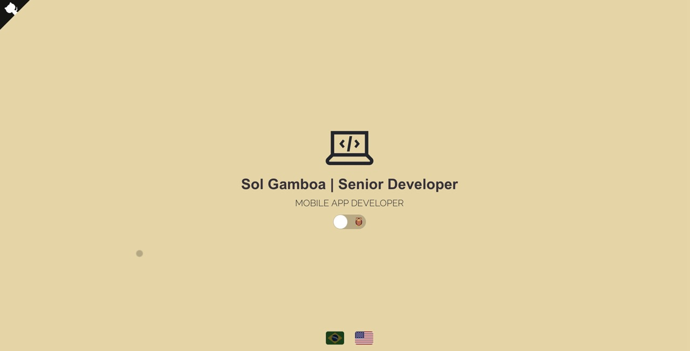

Portifólio
Projetos do qual fiz parte

Sistema de ponto online
Desenvolvido em Laravel PHP e com front-end em Blade, é um sistema simples para bater ponto onde uma API coleta as informações e persiste no banco e também traz a informação para ser exibida no front-end
Acesse aqui o projeto

Portifólio online
Desenvolvido em HTML/CSS e ReactJS, uma página única e interativa com as informações de carreira
Acesse aqui o projeto